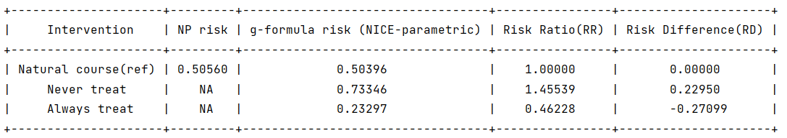
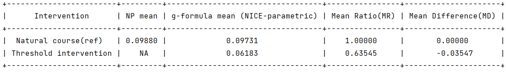
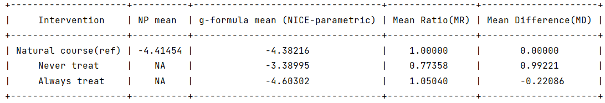

Outcome model
The package supports g-formula analysis on three types of outcomes: survival outcomes, fixed binary end of follow-up outcomes and continuous end of follow-up outcomes.
For all types of outcomes, users should specify the name of outcome in the argument ‘‘outcome_name’’, and the model statement for outcome variable in the argument ‘‘ymodel’’. If users are interested in the probability of failing of an event by a specified follow-up time k under different interventions, they need to specify the type of outcome as ‘survival’ in the argument ‘‘outcome_type’’. If users are interested in the outcome mean at a fixed time point, and the outcome distribution is binary, they need to specify the type of outcome as ‘binary_eof’. Similarly, they need to specify the type of outcome as ‘continuous_eof’ when the distribution of the outcome is continuous.
Arguments |
Description |
|---|---|
outcome_name |
(Required) A string specifying the name of the outcome variable in obs_data. |
ymodel |
(Required) A string specifying the model statement for the outcome variable. |
outcome_type |
(Required) A string specifying the “type” of outcome. The possible “types” are: “survival”, “continuous_eof”, and “binary_eof”. |
Survival outcome
For survival outcomes, the package will output estimates of contrasts in failure risks by a specified follow-up time k under different user-specified interventions.
Sample syntax:
outcome_name = 'Y'
ymodel = 'Y ~ L1 + L2 + L3 + A + lag1_A + lag1_L1 + lag1_L2 + t0'
outcome_type = 'survival'
time_points = 5
g = ParametricGformula(..., outcome_name = outcome_name, outcome_type = outcome_type, ymodel = ymodel, time_points = time_points, ...)
Users can also specify the follow-up time of interest for survival outcome by the argument ‘‘time_points’’.
Running example [code]:
import numpy as np
import pygformula
from pygformula import ParametricGformula
from pygformula.parametric_gformula.interventions import static
from pygformula.data import load_basicdata_nocomp
obs_data = load_basicdata_nocomp()
time_name = 't0'
id = 'id'
covnames = ['L1', 'L2', 'A']
covtypes = ['binary', 'bounded normal', 'binary']
covmodels = ['L1 ~ lag1_A + lag2_A + lag_cumavg1_L1 + lag_cumavg1_L2 + L3 + t0',
'L2 ~ lag1_A + L1 + lag_cumavg1_L1 + lag_cumavg1_L2 + L3 + t0',
'A ~ lag1_A + L1 + L2 + lag_cumavg1_L1 + lag_cumavg1_L2 + L3 + t0']
basecovs = ['L3']
outcome_name = 'Y'
outcome_model = 'Y ~ L1 + L2 + L3 + A + lag1_A + lag1_L1 + lag1_L2 + t0'
outcome_type = 'survival'
time_points = np.max(np.unique(obs_data[time_name])) + 1
int_descript = ['Never treat', 'Always treat']
g = ParametricGformula(obs_data = obs_data, id = id, time_name=time_name,
time_points = time_points, int_descript = int_descript,
covnames=covnames, covtypes=covtypes,
covmodels=covmodels, basecovs=basecovs,
outcome_name=outcome_name, ymodel=ymodel, outcome_type=outcome_type,
Intervention1_A = [static, np.zeros(time_points)],
Intervention2_A = [static, np.ones(time_points)])
g.fit()
Output:

Binary end of follow-up outcome
For binary end of follow-up outcomes, the package will output estimates of contrasts in the outcome probability under different user-specified treatment strategies.
Sample syntax:
outcome_name = 'Y'
ymodel = 'Y ~ L1 + A + lag1_A + lag1_L1 + L3 + t0'
outcome_type = 'binary_eof'
g = ParametricGformula(..., outcome_name = outcome_name, outcome_type = outcome_type, ymodel = ymodel, ...)
Running example [code]:
import numpy as np
import pygformula
from pygformula import ParametricGformula
from pygformula.parametric_gformula.interventions import threshold
from pygformula.data import load_binary_eof
obs_data = load_binary_eof()
time_name = 't0'
id = 'id'
covnames = ['L1', 'L2', 'A']
covtypes = ['binary', 'zero-inflated normal', 'normal']
covmodels = ['L1 ~ lag1_A + lag2_A + lag_cumavg1_L1 + L3 + t0',
'L2 ~ lag1_A + L1 + lag_cumavg1_L1 + lag_cumavg1_L2 + L3 + t0',
'A ~ lag1_A + L1 + L2 + lag_cumavg1_L1 + lag_cumavg1_L2 + L3 + t0']
basecovs = ['L3']
outcome_name = 'Y'
ymodel = 'Y ~ L1 + A + lag1_A + lag1_L1 + L3 + t0'
outcome_type = 'binary_eof'
int_descript = ['Threshold intervention']
g = ParametricGformula(obs_data = obs_data, id = id, time_name=time_name,
int_descript = int_descript,
Intervention1_A = [threshold, [0.5, float('inf')]],
covnames=covnames, covtypes=covtypes,
covmodels=covmodels, basecovs=basecovs,
outcome_name=outcome_name, ymodel=ymodel, outcome_type=outcome_type)
g.fit()
Output:

Continuous end of follow-up outcome
For continuous end of follow-up outcomes, the package will output estimates of contrasts in the outcome mean under different user-specified treatment strategies.
Sample syntax:
outcome_name = 'Y'
ymodel = 'Y ~ C(L1) + L2 + A'
outcome_type = 'continuous_eof'
g = ParametricGformula(..., outcome_name = outcome_name, outcome_type = outcome_type, ymodel = ymodel, ...)
Running example [code]:
import numpy as np
import pygformula
from pygformula import ParametricGformula
from pygformula.parametric_gformula.interventions import static
from pygformula.data import load_continuous_eof
obs_data = load_continuous_eof()
time_name = 't0'
id = 'id'
covnames = ['L1', 'L2', 'A']
covtypes = ['categorical', 'normal', 'binary']
covmodels = ['L1 ~ C(lag1_L1) + lag1_L2 + t0',
'L2 ~ lag1_L2 + C(lag1_L1) + lag1_A + t0',
'A ~ C(L1) + L2 + t0']
basecovs = ['L3']
outcome_name = 'Y'
outcome_model = 'Y ~ C(L1) + L2 + A'
outcome_type = 'continuous_eof'
time_points = np.max(np.unique(obs_data[time_name])) + 1
int_descript = ['Never treat', 'Always treat']
g = ParametricGformula(obs_data = obs_data, id = id, time_name=time_name,
int_descript=int_descript,
Intervention1_A = [static, np.zeros(time_points)],
Intervention2_A = [static, np.ones(time_points)],
covnames=covnames, covtypes=covtypes,
covmodels=covmodels, basecovs=basecovs,
outcome_name=outcome_name, ymodel=ymodel, outcome_type=outcome_type)
g.fit()
Output:
